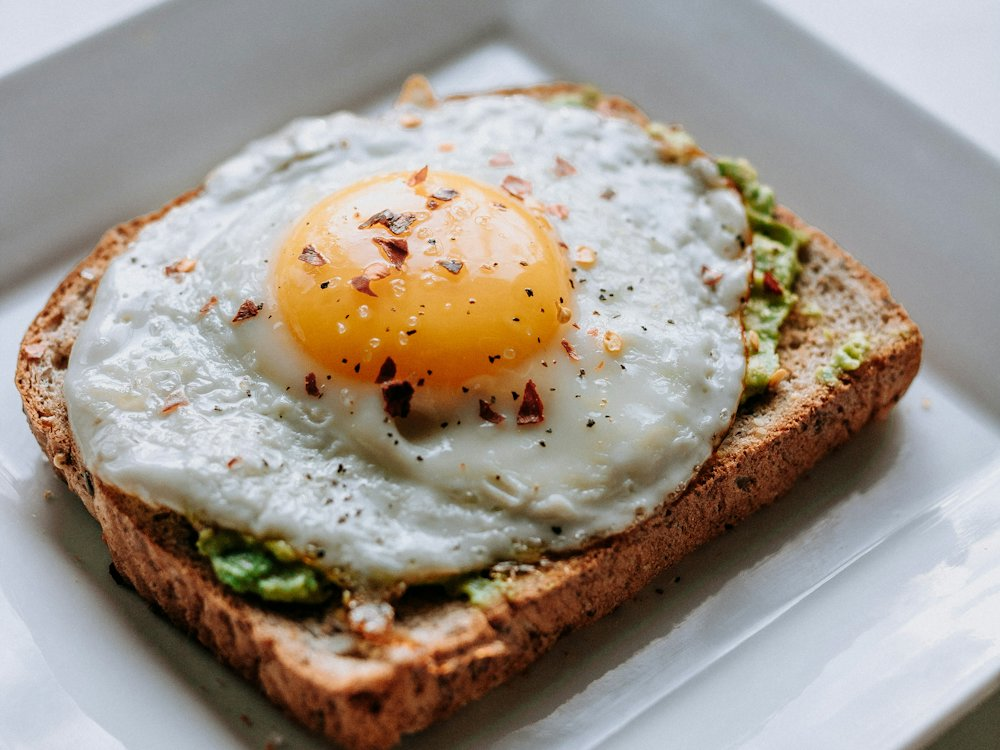

Неделька
Кафе · Европейская, завтраки · Алматы
Рейтинг
★ 4.6
2 975 оценок
Год открытия
2014
сеть работает с 2014 г.
Средний чек
≈4 000 ₸
оценка по типу заведения
Адрес и часы
📍 ул. Шевченко, 130, Алматы · Алмалинский район
🕒 пн-вс 07:30-22:00
О заведении
Городское кафе-сеть. Премия 2ГИС 2018.